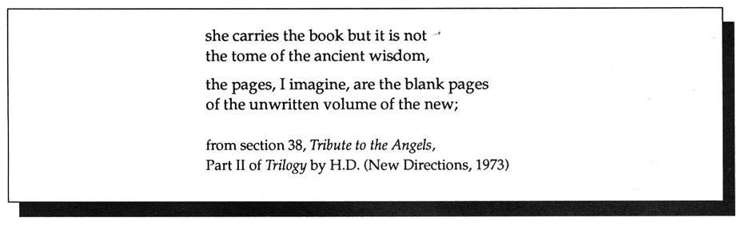

Editor's Notes
Everyday's an experiment in livelihood: working outside an institutional center. How to stay alive in unauthorized, freely moving language? Speaking to & with each other. Somehow--invent without ending. HOW(ever) appearing now for eight years against a much greater likelihood of "blank pages": the unprinted & uncirculated--leaves something in motion, like the images H.D. reads: "inevitably a shadow, a writing-on-the-wall, a curve like a reversed, unfinished S and a dot beneath it, a question mark, the shadow of a question. . . "
 --Meredith Stricker
--Meredith Stricker
•
Recently published or soon to appear: Imaginary Income by Maureen Owen, Hanging Loose Press; Alice Notley's Homer's Art from the Institute of Further Studies; Martine Bellen's new collection, Places People Do Not Enter, Rachel Blau DuPlessis's Drafts, and Jean Day's The I and the You, all three from Potes and Poets. Burning Deck Books enters their third decade with a new printing of Barbara Guest's verse and prose sequence, The Countess from Minneapolis, originally published in 1976; Jena Osman's Twelve Parts of Her, and a collection of poems by Julie Kalendek: The Fundamental Difference. Carla Harryman's chapbook, In the Mode Of, is just out from Zasterle Press. Rosmarie Waldrop's most recent volume of poetry, Lawn of Excluded Middle, is forthcoming from Tender Buttons. Lyn Hejinian's new book, OXOTA: A Short Russian Novel, is recently out from The Figures. Ann Lauterbach's new collection, Clamor, is just out from Viking Press. Kathleen Fraser will publish Etruscan Pages with Chax Press. Susan Gevirtz has two books coming out soon: Linen Minus, from Avenue B, and Taken Place, from Street Editions, Cambridge, England. No Language is Neutral, Dionne Brand's collection of poetry, is available from Coach House. Lori Anderson's Cultivating Excess will appear in spring 1992 from Eighth Mountain Press. Two volumes from Sheila Murphy are available: Sad Isn't the Color of the Dream from Stride Press in England, and TETH from Chax Press in Tucson. Kelsey Street has just published Myung Mi Kim's new book, Under Flag. Kelsey Street's forthcoming titles: Isle by Rena Rosenwasser; Ideal by Mei-mei Berssenbrugge; Rosy Medallions: Selected Works by Camille Roy; and Just Whistle, A Valentine by C.D. Wright. Elizabeth Robinson's chapbook, Nearings, is just out from Leave Books. New from Cosmos Press in Provincetown: Sarah Randolph's Gamelan; and The Rains of Home by Melanie Braverman. Two new anthologies: The Sexuality of Latinas, edited by Norma Alarcon, Cherrie Moraga, and Ana Castillo, from Third Woman; and InVersions: Writings by Dykes, Queers & Lesbians edited by Betsy Warland from Press Gang Publishers in Vancouver. Edith Jenkins's collection of memoirs and stories, Against A Field Sinister, is just out from City Lights. Excerpt A, from Meredith Stricker's visual piece, Vowels, appears in the recent Five Fingers Review, No. 10.
•
A new one-hour video, Women Working in Literature, is available from The American Poetry Archives (San Francisco State University, 1600 Holloway, San Francisco, California 94132) for $45. The video, written and moderated by Kathleen Fraser and edited by Laura Moriarty, looks at the historic development and contribution of American women writers since the mid-sixties, and was designed as a teaching tool for both writing and women's studies classes.
Modernist/feminist scholarship of interest: new work by Trinh T. Minh-ha, When the Moon Waxes Red, from Routledge. Adalaide Morris' essay, "Signaling: Feminism, Politics, and Mysticism," which was excerpted briefly in Vol. VI, No. 3 of HOW(ever) appears in its entirety in Sagetrieb, Vol. 9, No. 3. From Indiana University Press, Sexual Difference: A theory of Social Symbolic Practise by the Milan Women's Bookstore Collective. Getting Personal: Feminist Occasions and Other Autobiographical Acts by Nancy K. Miller is also available from Routledge. Susan Gevirtz' Narrative's Journey: The Fiction and Film Writing of Dorothy Richardson is forthcoming from the University of Illinois Press.
Attribution of quote used in title, Vol. VI, No. 3: the phrase: "center of senses, center of moment" is from the Alice Notley poem White Phosphorus.
With this issue, HOW(ever), ISSN 0895-5-5743, completes its sixth and final volume. For libraries interested in purchasing the complete series, beginning with Vol. I, we have a limited number of archival sets. Archival sets cost $15 per volume for individuals and $18 per volume for institutions. Orders may be sent to: Kathleen Fraser, 1936 Leavenworth Street, San Francisco, California 94133.

go to this issue's table of contents